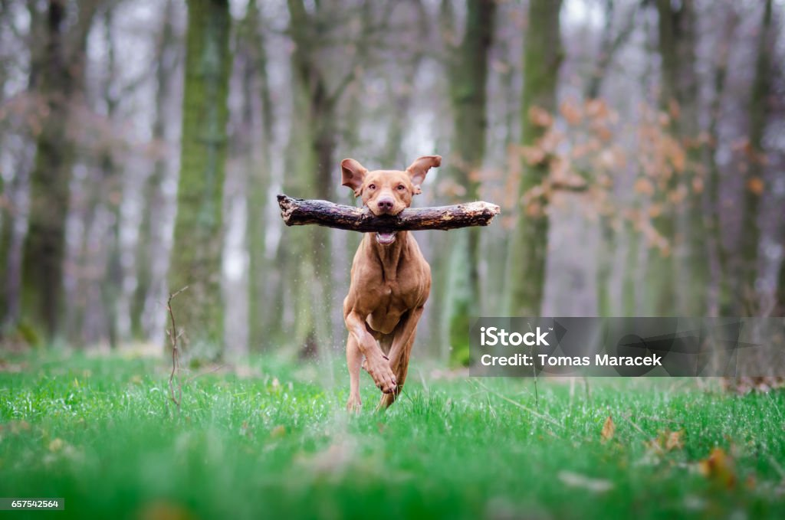

Katė yra mėsėdis plėšrūnas, gali medžioti daugiau nei 1000 rūšių smulkių ir nedidelių gyvūnų. Be žmonių priežiūros naminės katės sulaukėja, sėkmingai išgyvena laisvėje, dauginasi ir kartais sudaro ištisas sulaukėjusių kačių kolonijas. Naminės katės ir žmogaus santykiai laikomi abipusiais (mutualistiniais).

Šuo - iki šiol naminių šunų kilmė neišaiškinta: vieni mokslininkai mano, kad jie galbūt kilę iš pilkųjų vilkų (Canis lupus), bet kiti mano, kad pilkieji vilkai nėra naminių šunų protėviai, ir šunys buvo prijaukinti iš jau išnykusios, mums nežinomos kitos šunų (Canis) genties rūšies, dažnai minint nežinomą vilkų rūšį.Daugelyje šalių šunys dažniausiai laikomi kaip naminiai gyvūnėliai, nors įvairios šunų sporto rūšys leidžia jiems parodyti savo įgimtus sugebėjimus, o kai kurios šunų veislės iki šiol atlieka savo tradicines funkcijas - saugo avių ir galvijų bandas, taip pat naudojami narkotikų ar sprogmenų paieškai.
Panteros (Panthera) - katinių šeimos plėšriųjų žinduolių gentis, priklausanti didžiųjų kačių pošeimiui (Pantherinae). Mamalogai išskiria porą genties bruožų. Tik šie katiniai turi bendrą savybę - gali riaumoti (išskyrus snieginį leopardą). Nelaisvėje šios genties katės sėkmingai kryžminamos tarpusavyje. Tačiau užaugę panterų hibridai (tigraliūtis, liūtigris ir pan.) būna nevaisingi, palikuonių neveda. Panthera genties laukines kates 1816 metais aprašė žinomas vokiečių gamtininkas Lorencas Okenas (Lorenz Oken).